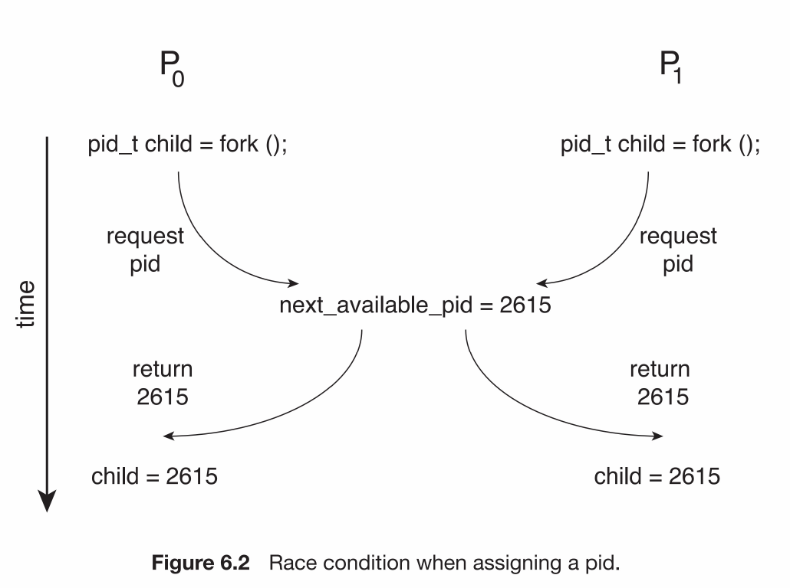
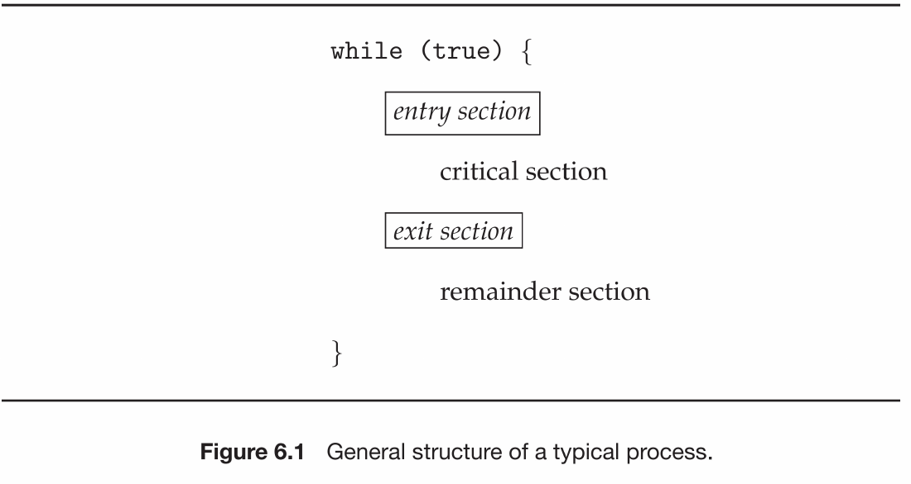
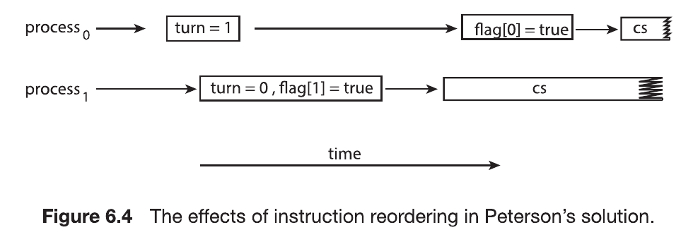
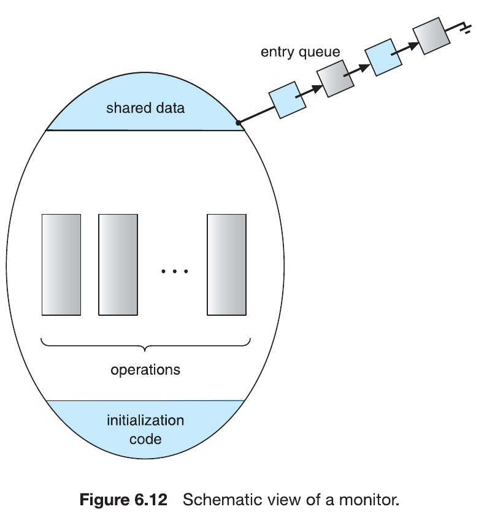
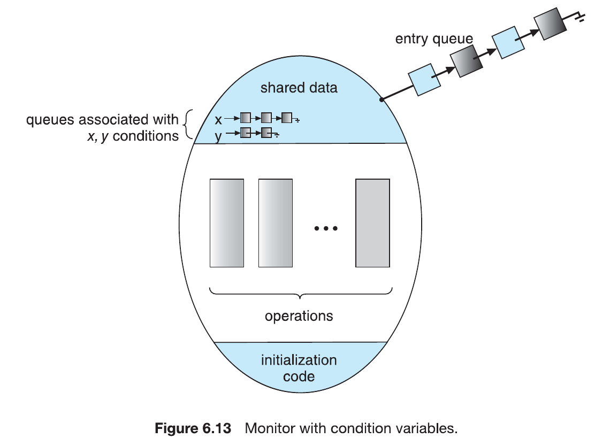

เริ่มที่นี่: บทนี้เรียนเรื่องอะไร และควรเรียนอย่างไร
Chapter 6 ตอบคำถามเดียว: เมื่อหลาย process หรือ thread ใช้ข้อมูลเดียวกันพร้อมกัน เราจะทำให้ข้อมูลไม่พังได้อย่างไร ทุกหัวข้อในบทคือ "เครื่องมือ" ที่ใช้แก้ปัญหานี้ เรียงจากระดับต่ำ (ฮาร์ดแวร์) ไปจนถึงระดับสูง (monitor)
เอกสารสองชุดที่คุณมี
สไลด์เป็นฉบับ 9th edition ส่วนหนังสือเป็น 10th edition เนื้อหาหลักตรงกัน ต่างกันเล็กน้อยในรายละเอียด เช่น สไลด์ใช้ block() แต่หนังสือใช้ sleep() และ bounded-waiting ในสไลด์ใช้ test_and_set ส่วนหนังสือใช้ compare_and_swap ในเว็บนี้จะบอกไว้ทุกครั้งที่สองฉบับต่างกัน
ภาพรวมเครื่องมือทั้งบท (จากต่ำไปสูง)
ลำดับการเรียนที่แนะนำ
- บทเรียน 1–2 ต้องแน่นที่สุด race condition และ 3 เงื่อนไขของ critical section คือฐานของทุกเรื่อง ถ้าข้อนี้ไม่แน่น บทหลังจะท่องจำแบบไม่เข้าใจ ลองเล่นตัวจำลอง count++ / count-- จนเข้าใจว่าทำไมได้ 4, 5 หรือ 6
- บทเรียน 3–5 คือ "วิธีสร้างล็อก" Peterson (software) → TAS/CAS (hardware) → mutex/spinlock ให้ฝึกอ่านโค้ดและพิสูจน์ว่าผ่าน 3 เงื่อนไขหรือไม่
- บทเรียน 6–8 คือหัวใจของข้อสอบ semaphore, deadlock/priority inversion, bounded-buffer, readers–writers ต้องเขียนโค้ดได้เองและบอกค่าเริ่มต้นของ semaphore ทุกตัว
- บทเรียน 9–11 monitor, การเลือกเครื่องมือ, ตัวอย่างใน OS จริง เน้นนิยามและความแตกต่าง
- บทเรียน 12–13 ทบทวน สรุปก่อนสอบ, โจทย์ท้ายบทพร้อมเฉลย และแบบทดสอบ ทำซ้ำจนได้เต็ม
Background และ Race Condition
Process ที่ทำงานพร้อมกัน (concurrent) อาจถูกขัดจังหวะ (interrupt) ได้ทุกเมื่อ แม้จะทำคำสั่งไปได้แค่ครึ่งเดียว ถ้ามันใช้ข้อมูลร่วมกัน ข้อมูลนั้นอาจผิดได้
คำศัพท์ที่ต้องรู้
- Cooperating process คือ process ที่ส่งผลหรือได้รับผลจาก process อื่น เช่น ใช้ shared memory ร่วมกัน
- Data inconsistency ข้อมูลไม่ถูกต้องเพราะถูกเข้าถึงพร้อมกัน
- Race condition สถานการณ์ที่หลาย process เข้าถึงและแก้ไขข้อมูลเดียวกันพร้อมกัน แล้ว ผลลัพธ์ขึ้นกับลำดับ ที่แต่ละตัวได้รัน
ตัวอย่างหลัก: Producer–Consumer กับตัวแปร count
บัฟเฟอร์วงกลมขนาด BUFFER_SIZE โดยมีตัวแปร count นับจำนวนช่องที่มีของ Producer เพิ่มค่า ส่วน Consumer ลดค่า
/* Producer */ while (true) { /* produce an item in next_produced */ while (count == BUFFER_SIZE) ; /* do nothing */ buffer[in] = next_produced; in = (in + 1) % BUFFER_SIZE; count++; }
/* Consumer */ while (true) { while (count == 0) ; /* do nothing */ next_consumed = buffer[out]; out = (out + 1) % BUFFER_SIZE; count--; /* consume the item */ }
แต่ละฝั่งถูกต้องเมื่อรันแยกกัน แต่เมื่อรันพร้อมกัน count อาจผิด เพราะ count++ ไม่ใช่คำสั่งเดียวในภาษาเครื่อง มันถูกแปลเป็น 3 คำสั่ง:
// count++
register1 = count
register1 = register1 + 1
count = register1
// count--
register2 = count
register2 = register2 - 1
count = register2
ถ้า CPU สลับไปมาระหว่างสองชุดนี้ (interleaving) ลำดับของคำสั่งในแต่ละชุดยังคงเดิม แต่การสลับกันทำให้ค่าสุดท้ายเป็น 4, 5 หรือ 6 ได้ทั้งที่ค่าถูกคือ 5 ตัวอย่างในหนังสือ (count = 5 ตอนเริ่ม):
| เวลา | ใคร | คำสั่ง | ผล |
|---|---|---|---|
| T0 | producer | register1 = count | register1 = 5 |
| T1 | producer | register1 = register1 + 1 | register1 = 6 |
| T2 | consumer | register2 = count | register2 = 5 |
| T3 | consumer | register2 = register2 − 1 | register2 = 4 |
| T4 | producer | count = register1 | count = 6 |
| T5 | consumer | count = register2 | count = 4 (ผิด) |
ถ้าสลับ T4 กับ T5 จะได้ count = 6 ซึ่งก็ผิดเช่นกัน ปัญหาเกิดเพราะทั้งคู่ "อ่านค่าเก่า" ก่อนที่อีกฝ่ายจะเขียนกลับ
ลองเอง: ตัวจำลอง count++ / count-- (เริ่มที่ count = 5)
กดเลือกว่าให้ใครรันคำสั่งถัดไป ลองหาลำดับที่ได้ 4, 5 และ 6
Race condition ในเคอร์เนลจริง
ไม่ใช่แค่โปรแกรมผู้ใช้ เคอร์เนลเองก็มี เช่น สอง process เรียก fork() พร้อมกัน แล้วทั้งคู่อ่านตัวแปร next_available_pid ได้ค่าเดียวกัน ทำให้ลูกสอง process ได้ PID ซ้ำกัน ตัวอย่างอื่นคือรายการไฟล์ที่เปิดอยู่ ตารางหน่วยความจำ รายการ process และการจัดการ interrupt

- ให้นิยาม race condition (ต้องมีคำว่า "ผลลัพธ์ขึ้นกับลำดับการเข้าถึง")
- ให้เขียน interleaving ที่ทำให้ count ผิด แล้วบอกค่าที่เป็นไปได้ทั้งหมด (4, 5, 6)
- วิธีแก้คือต้อง synchronize ให้มีเพียง process เดียวแก้ count ได้ในเวลาหนึ่ง ซึ่งนำไปสู่ critical-section problem
The Critical-Section Problem
มี n process {P0, …, Pn−1} แต่ละตัวมีโค้ดส่วนหนึ่งที่แตะข้อมูลร่วม เรียกว่า critical section เป้าหมายคือออกแบบ protocol ที่ทำให้ไม่มีสอง process อยู่ใน critical section พร้อมกัน
โครงสร้างของ process (ต้องจำ 4 ส่วน)

| ส่วน | หน้าที่ |
|---|---|
| Entry section | ขออนุญาตเข้า critical section (เช่น acquire lock, wait) |
| Critical section | โค้ดที่แก้ข้อมูลร่วม เช่น ตัวแปร ตาราง หรือไฟล์ |
| Exit section | บอกว่าออกแล้ว (release lock, signal) |
| Remainder section | โค้ดส่วนที่เหลือที่ไม่แตะข้อมูลร่วม |
3 เงื่อนไขของคำตอบที่ถูกต้อง
| เงื่อนไข | ความหมาย | คิดง่าย ๆ |
|---|---|---|
| 1. Mutual Exclusion | ถ้า Pi อยู่ใน critical section แล้ว process อื่นต้องไม่อยู่ใน critical section ของตน | ห้องน้ำมีคนเดียว |
| 2. Progress | ถ้าไม่มีใครอยู่ใน CS และมีคนอยากเข้า การเลือกว่าใครได้เข้าต้องทำโดยเฉพาะ process ที่ไม่ได้อยู่ใน remainder section และเลื่อนออกไปไม่ได้ไม่จำกัด | ห้องว่างแล้วมีคนรอ ต้องมีคนได้เข้า |
| 3. Bounded Waiting | มีขอบเขตของจำนวนครั้งที่ process อื่นแซงเข้า CS ได้ หลังจากที่ Pi ขอเข้าแล้วและก่อนจะได้เข้า | ไม่โดนแซงคิวตลอดไป (ไม่ starve) |
สมมติฐาน: ทุก process รันด้วยความเร็วไม่เป็นศูนย์ แต่ ห้ามสมมติ ว่าความเร็วสัมพัทธ์ของแต่ละ process เป็นเท่าไร
ตัวอย่างที่ไม่ผ่าน: อัลกอริทึม turn อย่างเดียว (สไลด์ 6.9)
do { while (turn == j); // รอจนกว่าจะถึงตาเรา /* critical section */ turn = j; // ยกตาให้อีกฝ่าย /* remainder section */ } while (true);
flag[]Critical section ใน OS: preemptive vs nonpreemptive kernel
ทำไมไม่ปิด interrupt ไปเลย? บนเครื่อง CPU เดียวใช้ได้ (โค้ดรันต่อเนื่องไม่ถูกแทรก) แต่บน multiprocessor ต้องส่งข้อความไปปิดทุก CPU ทำให้ช้า ระบบไม่ scale และนาฬิการะบบที่อัปเดตด้วย interrupt ก็จะเพี้ยน
Peterson's Solution
คำตอบแบบ software ล้วนสำหรับ 2 process (Pi และ Pj โดย j = 1 − i) สมมติว่าคำสั่ง load และ store เป็น atomic
ตัวแปรร่วม
int turn;ตาของใครที่จะได้เข้า CSboolean flag[2];flag[i] = trueแปลว่า Pi พร้อมจะเข้า CS
while (true) { flag[i] = true; // ฉันอยากเข้า turn = j; // แต่ให้เธอไปก่อน (สุภาพ) while (flag[j] && turn == j) ; // รอถ้าเธออยากเข้าและเป็นตาเธอ /* critical section */ flag[i] = false; // ฉันออกแล้ว /* remainder section */ }
Figure 6.3 (หนังสือ หน้า 263) · สไลด์ 6.13 ใช้ do {...} while(true) แทน แต่ความหมายเหมือนกัน
เคล็ดลับการจำ: "ยกมือ (flag) แล้วเชิญอีกฝ่ายก่อน (turn = j)" ถ้าทั้งคู่เชิญกันพร้อมกัน ค่าของ turn ที่เขียนทีหลังจะทับค่าแรก คนที่เขียน turn ทีหลังคือคนที่ต้องรอ
พิสูจน์ 3 เงื่อนไข
| เงื่อนไข | เหตุผล |
|---|---|
| Mutual exclusion | Pi เข้า CS ได้ก็ต่อเมื่อ flag[j] == false หรือ turn == i ถ้าทั้งคู่อยู่ใน CS พร้อมกัน ต้องมี flag[0] = flag[1] = true ดังนั้นทั้งคู่ต้องผ่าน while ด้วยเงื่อนไข turn แต่ turn เป็น 0 หรือ 1 ได้ค่าเดียว จึงเป็นไปไม่ได้ |
| Progress | Pi จะติดอยู่ได้เฉพาะเมื่อ flag[j] == true && turn == j ถ้า Pj ไม่ได้อยากเข้า flag[j] เป็น false และ Pi เข้าได้เลย ถ้าทั้งคู่รอ turn จะชี้ให้ตัวใดตัวหนึ่งเข้า |
| Bounded waiting | เมื่อ Pj ออกจาก CS จะตั้ง flag[j] = false หรือถ้าจะกลับมาเข้าใหม่จะต้องตั้ง turn = i ดังนั้น Pi รออย่างมาก 1 รอบ ของ Pj |
ทำไม Peterson ใช้ไม่ได้บนเครื่องสมัยใหม่
เพื่อความเร็ว processor และ compiler อาจ สลับลำดับ (reorder) คำสั่ง read/write ที่ไม่มี dependency ต่อกัน สำหรับโปรแกรม thread เดียวไม่มีผล แต่กับข้อมูลร่วมระหว่าง thread อาจผิด ตัวอย่าง:
// shared boolean flag = false; int x = 0; // Thread 1 while (!flag) ; print x;
// Thread 2 x = 100; flag = true; // ถ้าถูกสลับเป็น flag=true ก่อน x=100 // Thread 1 อาจพิมพ์ 0 ได้
ถ้าสองบรรทัดแรกของ entry section ใน Peterson (flag[i] = true; turn = j;) ถูกสลับ ทั้งสอง thread อาจอยู่ใน CS พร้อมกันได้:

flag[i]=true ก่อน turn=j และเงื่อนไข flag[j] && turn == j), อธิบายว่าผ่าน 3 เงื่อนไขอย่างไร และบอกข้อจำกัด: ใช้ได้แค่ 2 process, busy waiting, ไม่รับประกันบนสถาปัตยกรรมที่ reorder คำสั่งHardware Support for Synchronization
ทุกวิธีในส่วนนี้ใช้แนวคิดเดียวกันคือ locking: ปกป้อง critical region ด้วยล็อก โดยอาศัยคำสั่งฮาร์ดแวร์ที่เป็น atomic (ทำรวดเดียว ขัดจังหวะไม่ได้)
do { acquire lock critical section release lock remainder section } while (TRUE);
4.1 Memory Barriers (มีในหนังสือเท่านั้น)
Memory model คือสิ่งที่สถาปัตยกรรมรับประกันเรื่องการมองเห็นหน่วยความจำ มี 2 แบบ:
- Strongly ordered การแก้หน่วยความจำบน CPU หนึ่ง CPU อื่นเห็นทันที
- Weakly ordered CPU อื่นอาจยังไม่เห็นทันที
Memory barrier (memory fence) คือคำสั่งที่บังคับให้ load/store ก่อนหน้าทั้งหมดเสร็จและมองเห็นได้ ก่อนที่ load/store ถัดไปจะเริ่ม แก้ปัญหาตัวอย่างก่อนหน้าได้ดังนี้
// Thread 1: รับประกันว่าอ่าน flag ก่อน x while (!flag) memory_barrier(); print x; // Thread 2: รับประกันว่าเขียน x ก่อน flag x = 100; memory_barrier(); flag = true;
เป็นคำสั่งระดับต่ำมาก ปกติใช้โดยนักพัฒนาเคอร์เนลเท่านั้น
4.2 test_and_set()
boolean test_and_set(boolean *target) { boolean rv = *target; // เก็บค่าเดิม *target = true; // ตั้งเป็น true เสมอ return rv; // คืนค่าเดิม } // ใช้ทำ mutual exclusion: lock เริ่มต้น = false do { while (test_and_set(&lock)) ; /* do nothing */ /* critical section */ lock = false; /* remainder section */ } while (true);
คนแรกที่เรียกได้ค่าเดิม false จึงหลุด while เข้า CS ได้ พร้อมกับตั้ง lock = true คนต่อ ๆ ไปได้ true กลับไปจึงวนรอ ถ้าสอง CPU เรียกพร้อมกัน ฮาร์ดแวร์จะทำทีละคำสั่งในลำดับใดลำดับหนึ่ง
4.3 compare_and_swap() (CAS)
int compare_and_swap(int *value, int expected, int new_value) { int temp = *value; if (*value == expected) // สลับเฉพาะเมื่อค่าตรงกับที่คาด *value = new_value; return temp; // คืนค่าเดิมเสมอ } // lock เริ่มต้น = 0 while (true) { while (compare_and_swap(&lock, 0, 1) != 0) ; /* do nothing */ /* critical section */ lock = 0; /* remainder section */ }
บน Intel x86 ใช้คำสั่ง lock cmpxchg <dest>, <src> โดย prefix lock จะล็อกบัสระหว่างอัปเดต
4.4 Bounded-waiting mutual exclusion (ผ่านครบ 3 ข้อ)
เพิ่มอาร์เรย์ waiting[n] (เริ่มต้น false) เมื่อออกจาก CS จะไล่หา process ถัดไปแบบวงกลม (i+1, i+2, …, i−1) ที่กำลังรอ แล้วส่งสิทธิ์ให้โดยตรง
// สไลด์ 6.21 (test_and_set) — หนังสือ Fig 6.9 ใช้ CAS แบบเดียวกัน do { waiting[i] = true; key = true; while (waiting[i] && key) key = test_and_set(&lock); waiting[i] = false; /* critical section */ j = (i + 1) % n; while ((j != i) && !waiting[j]) j = (j + 1) % n; if (j == i) lock = false; // ไม่มีใครรอ ปลดล็อก else waiting[j] = false; // ส่งสิทธิ์ให้ Pj โดยไม่ปลดล็อก /* remainder section */ } while (true);
- ME: Pi เข้าได้เมื่อ
waiting[i] == falseหรือkey == falseซึ่ง key จะเป็น false ได้เฉพาะคนแรกที่เรียก TAS และ waiting[i] จะถูกตั้ง false ได้ทีละคนตอนมีคนออก - Progress: คนที่ออกจะปลด lock หรือตั้ง waiting[j] = false ทำให้มีคนรอได้เข้าเสมอ
- Bounded waiting: สแกนแบบวงกลม ดังนั้นใครที่รออยู่จะได้เข้าภายใน n − 1 รอบ
4.5 Atomic Variables (มีในหนังสือเท่านั้น)
ชนิดข้อมูลที่มีการดำเนินการแบบ atomic เช่น atomic integer ซึ่งมักสร้างจาก CAS:
void increment(atomic_int *v) { int temp; do { temp = *v; } while (temp != compare_and_swap(v, temp, temp+1)); }
ข้อจำกัด: แก้ race ได้เฉพาะการอัปเดตตัวแปรเดียว เช่น counter แต่ไม่แก้ทุกกรณี ถ้าใช้ atomic count ใน bounded buffer แล้วมี consumer 2 ตัวรออยู่ตอนบัฟเฟอร์ว่าง เมื่อ producer ใส่ของ 1 ชิ้น consumer ทั้งสองอาจหลุด while ไปพร้อมกันทั้งที่มีของแค่ 1 ชิ้น
- เขียนนิยาม TAS และ CAS พร้อมบอกค่าที่ return (คืนค่า เดิม เสมอ)
- ทำไมปิด interrupt ใช้ไม่ได้บน multiprocessor
- TAS/CAS แบบง่ายขาด bounded waiting และแก้อย่างไร (waiting[] + สแกนวงกลม, n−1 รอบ)
Mutex Locks และ Spinlock
คำสั่งฮาร์ดแวร์ซับซ้อนและโปรแกรมเมอร์ทั่วไปเข้าถึงไม่ได้ OS จึงสร้างเครื่องมือ software ระดับสูงขึ้น ตัวที่ง่ายที่สุดคือ mutex lock (mutex ย่อมาจาก mutual exclusion)
acquire() {
while (!available)
; /* busy wait */
available = false;
}
release() {
available = true;
}
while (true) { acquire lock critical section release lock remainder section }
- มีตัวแปร boolean
availableบอกว่าล็อกว่างหรือไม่ - การเรียก
acquire()และrelease()ต้องเป็น atomic ปกติสร้างจาก CAS - ข้อเสีย: ต้อง busy waiting คือวนลูปเปลือง CPU ขณะรอ ล็อกแบบนี้จึงเรียกว่า spinlock (เพราะ "หมุน" รอ)
Spinlock ดีตอนไหน?
Semaphores
Semaphore S คือตัวแปร integer ที่ (นอกจากตอนกำหนดค่าเริ่มต้น) เข้าถึงได้ผ่าน 2 operation ที่เป็น atomic เท่านั้น: wait() และ signal() คิดค้นโดย Edsger Dijkstra
// เดิมชื่อ P (proberen = to test) wait(S) { while (S <= 0) ; // busy wait S--; }
// เดิมชื่อ V (verhogen = to increment)
signal(S) {
S++;
}
การทดสอบ S <= 0 และการลดค่า S-- ต้องทำโดยไม่ถูกขัดจังหวะ
6.1 การใช้งาน (Semaphore Usage)
| ชนิด | ช่วงค่า | ใช้ทำอะไร |
|---|---|---|
| Binary semaphore | 0 หรือ 1 | ทำงานเหมือน mutex lock ใช้ทำ mutual exclusion |
| Counting semaphore | ไม่จำกัด | คุมทรัพยากรที่มี N ชิ้น: ตั้งค่าเริ่มต้น = N, ขอใช้ = wait, คืน = signal, ค่า 0 = ถูกใช้หมด |
ใช้บังคับลำดับการทำงาน (S1 ต้องเกิดก่อน S2)
// semaphore synch = 0; P1: S1; signal(synch); P2: wait(synch); // ติดอยู่จนกว่า P1 จะ signal S2;
เพราะ synch เริ่มที่ 0 P2 จึงรัน S2 ได้หลังจากที่ P1 ทำ S1 และ signal แล้วเท่านั้น สไลด์ยังบอกด้วยว่าเราสร้าง counting semaphore จาก binary semaphore ได้
6.2 Implementation แบบไม่มี busy waiting
แทนที่จะวนรอ ให้ process หลับ (block) แล้วเข้าคิวของ semaphore เมื่อมีคน signal จึง ปลุก (wakeup) ให้ไปอยู่ใน ready queue
typedef struct { int value; struct process *list; // คิวของ process ที่รอ } semaphore; wait(semaphore *S) { S->value--; if (S->value < 0) { add this process to S->list; block(); // หนังสือ 10th ed. เรียก sleep() } } signal(semaphore *S) { S->value++; if (S->value <= 0) { remove a process P from S->list; wakeup(P); } }
ลองเอง: ตัวจำลอง semaphore แบบมีคิว
การทำให้ wait() และ signal() เป็น atomic คือ critical-section problem อีกชั้นหนึ่ง บน CPU เดียวใช้การปิด interrupt ได้ บน multicore ต้องใช้ CAS หรือ spinlock เรา ไม่ได้กำจัด busy waiting หมด แค่ย้ายจาก CS ของแอป (ที่อาจยาวเป็นนาที) มาไว้ใน CS ของ wait/signal ซึ่งสั้นมาก (ราว 10 คำสั่ง) จึงแทบไม่ต้องรอ
คิวรอจะใช้กลยุทธ์ใดก็ได้ แต่ถ้าอยากได้ bounded waiting ให้ใช้ FIFO (เก็บ pointer ไปยัง PCB)
ปัญหาเมื่อใช้ semaphore ผิด (สไลด์ 6.38 · หนังสือ §6.7)
| ใช้ผิดแบบ | ผล |
|---|---|
signal(mutex) … CS … wait(mutex) (สลับลำดับ) | หลาย process เข้า CS พร้อมกัน ละเมิด mutual exclusion |
wait(mutex) … CS … wait(mutex) | process ค้างถาวรที่ wait ครั้งที่สอง (deadlock / liveness failure) |
| ลืม wait หรือ signal (หรือทั้งคู่) | ละเมิด ME หรือ process ค้างถาวร |
ความผิดพลาดพวกนี้เกิดเฉพาะบางลำดับการรัน จึงหาและทำซ้ำได้ยาก นี่คือแรงจูงใจของ monitor ในบทเรียน 9
Deadlock, Starvation และ Priority Inversion
หนังสือเรียกกลุ่มนี้ว่า liveness failure ซึ่งก็คือ process ไม่ได้ไปต่อ ทำให้ละเมิด progress หรือ bounded waiting
Deadlock
สองตัวขึ้นไปรอเหตุการณ์ที่มีแต่ตัวที่กำลังรออยู่ด้วยกันเท่านั้นที่ทำให้เกิดได้ (ในที่นี้เหตุการณ์คือ signal())
// S = 1, Q = 1 P0 P1 wait(S); wait(Q); wait(Q); wait(S); ← ติดกันทั้งคู่ ... ... signal(S); signal(Q); signal(Q); signal(S);
ถ้า P0 ทำ wait(S) แล้ว P1 ทำ wait(Q) จากนั้น P0 จะติดที่ wait(Q) (รอ P1 signal Q) และ P1 ติดที่ wait(S) (รอ P0 signal S) ไม่มีใครไปต่อได้ (รายละเอียดอยู่ในบท Deadlocks)
Starvation (indefinite blocking)
process อาจไม่เคยถูกเอาออกจากคิวของ semaphore เลย เช่น ถ้าคิวเป็นแบบ LIFO
Priority Inversion
มี 3 process ที่ priority L < M < H โดย H ต้องการ semaphore S ที่ L ถืออยู่ ระหว่างที่ H รอ M ซึ่งไม่ได้ใช้ S เลยกลับ preempt L ได้ ทำให้ H ต้องรอนานขึ้นเพราะ M (ตัวที่ priority ต่ำกว่า H)
เกิดได้เฉพาะระบบที่มี priority มากกว่า 2 ระดับ วิธีแก้คือ priority-inheritance protocol: process ที่ถือทรัพยากรซึ่ง process priority สูงกว่าต้องการ จะได้ ยืม priority สูงนั้นชั่วคราว จนใช้ทรัพยากรเสร็จ แล้วคืน priority เดิม ในตัวอย่างนี้ L จะได้ priority ของ H ทำให้ M แทรกไม่ได้ เมื่อ L ปล่อย S ตัวที่รันต่อคือ H ไม่ใช่ M
wait(mutex)…wait(mutex) เป็น liveness failure (Exercise 6.24)Classical Problems of Synchronization
เป็นโจทย์มาตรฐานที่ใช้ทดสอบเครื่องมือ synchronization ใหม่ ๆ ในสไลด์มี 2 ข้อ ใช้ semaphore แก้ เนื้อหานี้อยู่ในสไลด์แต่ไม่อยู่ใน PDF หนังสือบท 6 ที่ให้มา จึงยึดตามสไลด์
1. Bounded-Buffer Problem
บัฟเฟอร์ n ช่อง แต่ละช่องเก็บได้ 1 ชิ้น ใช้ semaphore 3 ตัว:
| Semaphore | ค่าเริ่มต้น | หน้าที่ |
|---|---|---|
mutex | 1 | กันไม่ให้สองฝ่ายแก้บัฟเฟอร์พร้อมกัน (mutual exclusion) |
full | 0 | นับช่องที่ มีของ |
empty | n | นับช่องที่ ว่าง |
/* Producer */ do { /* produce item in next_produced */ wait(empty); // รอช่องว่าง wait(mutex); /* add next_produced to buffer */ signal(mutex); signal(full); // เพิ่มจำนวนของ } while (true);
/* Consumer */ do { wait(full); // รอให้มีของ wait(mutex); /* remove item to next_consumed */ signal(mutex); signal(empty); // เพิ่มช่องว่าง /* consume next_consumed */ } while (true);
สังเกตความสมมาตร: producer รอ empty แล้ว signal full ส่วน consumer รอ full แล้ว signal empty
wait(mutex) ก่อน แล้วบัฟเฟอร์เต็ม (empty = 0) producer จะหลับที่ wait(empty) ทั้งที่ถือ mutex อยู่ consumer ก็เข้ามาเอาของออกไม่ได้เพราะติด wait(mutex) จึงเกิด deadlock กฎคือให้ wait semaphore ที่นับทรัพยากร (empty/full) ก่อน mutex เสมอ ส่วนการสลับลำดับ signal ไม่ทำให้เกิด deadlock2. Readers–Writers Problem
ข้อมูลชุดหนึ่งถูกใช้ร่วมกัน Readers อ่านอย่างเดียว ส่วน Writers ทั้งอ่านและเขียน ต้องการให้ reader หลายตัวอ่านพร้อมกันได้ แต่ writer เข้าได้ทีละตัวและต้องอยู่คนเดียว
| ข้อมูลร่วม | ค่าเริ่มต้น | หน้าที่ |
|---|---|---|
rw_mutex | 1 | ล็อกตัวข้อมูล ใช้ร่วมระหว่าง writer และ "reader กลุ่มแรก/กลุ่มสุดท้าย" |
mutex | 1 | ปกป้องตัวแปร read_count |
read_count | 0 | จำนวน reader ที่กำลังอ่าน |
/* Writer */ do { wait(rw_mutex); /* writing is performed */ signal(rw_mutex); } while (true);
/* Reader */ do { wait(mutex); read_count++; if (read_count == 1) // reader คนแรก wait(rw_mutex); // ล็อกกัน writer signal(mutex); /* reading is performed */ wait(mutex); read_count--; if (read_count == 0) // reader คนสุดท้าย signal(rw_mutex); // ปล่อยให้ writer signal(mutex); } while (true);
เมื่อ writer อยู่ใน CS และมี reader n ตัวรอ reader ตัวแรกจะรออยู่ที่ rw_mutex ส่วนอีก n−1 ตัวจะรออยู่ที่ mutex
Variations
- First readers–writers problem (โค้ดข้างบน): reader ไม่ต้องรอ เว้นแต่ writer ได้สิทธิ์ไปแล้ว ผลคือ writer อาจ starve
- Second readers–writers problem: เมื่อ writer พร้อม ให้ writer ได้เขียนเร็วที่สุด ผลคือ reader อาจ starve
- ทั้งสองแบบมี starvation จึงมี variation อื่นเพิ่ม บางระบบแก้โดยให้เคอร์เนลมี reader–writer locks
Monitors และ Condition Variables
Monitor เป็น abstraction ระดับสูงในระดับภาษาโปรแกรม เป็น abstract data type (ADT) ที่รวมข้อมูลร่วมกับฟังก์ชันที่ใช้ข้อมูลนั้นไว้ด้วยกัน และรับประกันว่า มีได้เพียง process เดียวที่ active อยู่ใน monitor ในเวลาหนึ่ง โปรแกรมเมอร์จึงไม่ต้องเขียน wait/signal เพื่อทำ mutual exclusion เอง
monitor monitor_name { /* shared variable declarations */ function P1 (...) { ... } function P2 (...) { ... } ... function Pn (...) { ... } initialization_code (...) { ... } }
Figure 6.11 (หนังสือ หน้า 277) · สไลด์ 6.39
ตัวแปรภายใน monitor เข้าถึงได้เฉพาะจากฟังก์ชันใน monitor เท่านั้น และฟังก์ชันใน monitor เข้าถึงได้เฉพาะตัวแปรภายในและพารามิเตอร์ของตัวเอง

Condition Variables
monitor อย่างเดียวยังไม่พอสำหรับบาง scheme เช่น ต้องรอให้ "บัฟเฟอร์มีของ" ก่อน จึงเพิ่มตัวแปรชนิด condition:
condition x, y; x.wait(); // process ที่เรียกจะถูกพักจนกว่าจะมีคนเรียก x.signal() x.signal(); // ปลุก process ที่รอ x มา 1 ตัว (ถ้าไม่มีใครรอ = ไม่มีผลอะไร)

x.signal() ถ้าไม่มีใครรอ จะไม่มีผลอะไรเลย สถานะของ x เหมือนไม่เคยเรียก ส่วน signal() ของ semaphore เพิ่มค่าเสมอ (มีผลต่อสถานะของ semaphore เสมอ) ดังนั้นคนที่มา wait ทีหลังจะผ่านได้ทันทีเมื่อ P เรียก x.signal() และ Q รอ x อยู่ ใครได้รันต่อ?
P กับ Q จะ active พร้อมกันใน monitor ไม่ได้ จึงมี 2 ทางเลือก:
| แบบ | สิ่งที่เกิด | เหตุผล |
|---|---|---|
| Signal and wait | P รอจนกว่า Q จะออกจาก monitor หรือไปรอ condition อื่น | Q ได้รันตอนที่เงื่อนไขที่รอยังเป็นจริงแน่นอน |
| Signal and continue | Q รอจนกว่า P จะออกจาก monitor หรือไปรอ condition อื่น | P กำลังรันอยู่แล้ว ให้รันต่อจึงดูสมเหตุสมผล แต่พอถึงตา Q เงื่อนไขอาจไม่จริงแล้ว |
ทางสายกลาง (Concurrent Pascal): P ที่ signal จะออกจาก monitor ทันที แล้ว Q ได้รันต่อ ภาษาอื่นที่มี monitor ได้แก่ Mesa, C#, Java
Implementing a monitor using semaphores (หนังสือ §6.7.2)
ใช้ signal-and-wait โดยมี mutex = 1 (เข้า monitor), next = 0 (ให้ตัวที่ signal ไปหลับรอ), next_count = 0 (จำนวนที่หลับบน next) และต่อ condition x มี x_sem = 0 กับ x_count = 0
// แต่ละฟังก์ชัน F ภายนอก wait(mutex); ... body of F ... if (next_count > 0) signal(next); else signal(mutex);
// x.wait() x_count++; if (next_count > 0) signal(next); else signal(mutex); wait(x_sem); x_count--; // x.signal() if (x_count > 0) { next_count++; signal(x_sem); wait(next); next_count--; }
Resuming processes: x.wait(c)
ถ้ามีหลายตัวรอ x อยู่ FCFS อาจไม่พอ จึงใช้ conditional-wait x.wait(c) โดย c คือ priority number เมื่อ x.signal() ตัวที่มีค่า c น้อยที่สุด (priority สูงสุด) ได้รันก่อน
monitor ResourceAllocator { boolean busy; condition x; void acquire(int time) { if (busy) x.wait(time); // ใครขอเวลาสั้นสุดได้ก่อน busy = true; } void release() { busy = false; x.signal(); } initialization_code() { busy = false; } } // วิธีใช้: R.acquire(t); ... access the resource ...; R.release();
monitor ก็ไม่ได้กันความผิดพลาดได้ทั้งหมด process ยังอาจใช้ทรัพยากรโดยไม่ขอก่อน, ไม่คืน, คืนสิ่งที่ไม่ได้ขอ หรือขอซ้ำ 2 ครั้งได้
Evaluation: เลือกเครื่องมือไหนดี
หัวข้อนี้มีในหนังสือแต่ไม่มีในสไลด์ ให้อ่านเพื่อความเข้าใจ และเผื่อออกข้อสอบเปรียบเทียบ
| ระดับ contention | ผล |
|---|---|
| Uncontended | เร็วทั้งคู่ CAS เร็วกว่าเล็กน้อย |
| Moderate contention | CAS เร็วกว่า (อาจมาก) เพราะ CAS มักสำเร็จในไม่กี่รอบ ส่วนล็อกต้องพักและ context switch |
| High contention | Traditional locking (mutex/semaphore) เร็วกว่าในที่สุด |
กฎการเลือกใช้
| สถานการณ์ | เครื่องมือที่เหมาะ |
|---|---|
| อัปเดตตัวแปรเดียว เช่น counter, sequence | Atomic integer (เบากว่าล็อกมาก) |
| multiprocessor และถือล็อกช่วงสั้น | Spinlock |
| ปกป้อง critical section ทั่วไป | Mutex lock (ง่ายและ overhead น้อยกว่า binary semaphore) |
| ทรัพยากรจำนวนจำกัด N ชิ้น | Counting semaphore |
| มี reader มากกว่า writer | Reader–writer lock (ให้ concurrency สูงกว่า) |
| ต้องการความง่ายในการเขียน | Monitor / condition variable (แต่ overhead สูง อาจ scale ไม่ดีเมื่อ contention สูง) |
Synchronization Examples: Solaris, Windows, Linux, Pthreads
| ระบบ | สิ่งที่ใช้ |
|---|---|
| Solaris |
|
| Windows |
|
| Linux |
|
| Pthreads |
|
/* ตัวอย่าง Pthreads mutex (เสริมความเข้าใจ) */ #include <pthread.h> pthread_mutex_t mutex; pthread_mutex_init(&mutex, NULL); pthread_mutex_lock(&mutex); // acquire /* critical section */ pthread_mutex_unlock(&mutex); // release
สรุปก่อนสอบและโจทย์ท้ายบท
สรุปหนึ่งหน้า
| เครื่องมือ | ระดับ | ME | Progress | Bounded wait | Busy wait? | หมายเหตุ |
|---|---|---|---|---|---|---|
| turn อย่างเดียว | SW | ✓ | ✗ | ✓ | ใช่ | strict alternation |
| Peterson | SW | ✓ | ✓ | ✓ | ใช่ | 2 process, พังเมื่อ reorder |
| TAS / CAS แบบง่าย | HW | ✓ | ✓ | ✗ | ใช่ | ไม่มีคิว |
| TAS/CAS + waiting[] | HW | ✓ | ✓ | ✓ | ใช่ | รอไม่เกิน n−1 รอบ |
| Mutex (spinlock) | OS | ✓ | ✓ | ขึ้นกับการสร้าง | ใช่ | ดีเมื่อถือสั้น < 2 context switch |
| Semaphore มีคิว | OS | ✓ | ✓ | ✓ ถ้าคิว FIFO | ไม่ (ยกเว้นใน wait/signal) | ค่าลบ = จำนวนที่รอ |
| Monitor | ภาษา | ✓ อัตโนมัติ | ✓ | ขึ้นกับการ resume | ไม่ | ใช้ condition variable |
- Race condition: ผลขึ้นกับลำดับการเข้าถึงข้อมูลร่วม
- Critical section: โค้ดที่แก้ข้อมูลร่วม ต้องผ่าน ME, Progress, Bounded waiting
- Software solution อย่าง Peterson ไม่ทำงานดีบนสถาปัตยกรรมสมัยใหม่
- Hardware support: memory barriers, TAS/CAS, atomic variables
- Semaphore ต่างจาก mutex ตรงที่เป็นจำนวนเต็ม จึงแก้โจทย์ได้หลากหลายกว่า
- Monitor = ADT ระดับสูง + condition variable
- ทุกวิธีอาจเจอ liveness failure ได้ เช่น deadlock
Practice Exercises พร้อมแนวตอบ
6.1 การปิด interrupt บ่อย ๆ มีผลต่อนาฬิการะบบอย่างไร และลดผลได้อย่างไร
นาฬิการะบบอัปเดตด้วย timer interrupt ถ้าปิด interrupt บ่อยหรือนาน จะพลาด clock tick ทำให้เวลาระบบคลาดเคลื่อน และการ schedule ตาม time quantum ก็เพี้ยน วิธีลดผลคือปิด interrupt ให้สั้นที่สุด (เฉพาะไม่กี่คำสั่ง) หรือใช้ hardware clock แยกที่ไม่พึ่ง interrupt แล้วอ่านค่าจากมันมาชดเชย
6.2 busy waiting คืออะไร มีการรอแบบอื่นไหม เลี่ยงได้ทั้งหมดหรือไม่
Busy waiting คือ process วนลูปตรวจเงื่อนไขซ้ำ ๆ ขณะรอ จึงใช้ CPU ไปเปล่า ๆ การรออีกแบบคือ blocking/sleeping: ย้าย process ไปอยู่ใน waiting queue แล้วปลุกเมื่อเหตุการณ์เกิด เลี่ยงได้เกือบหมดแต่ไม่ทั้งหมด เพราะการทำให้ wait/signal เป็น atomic บน multiprocessor ยังต้องใช้ spinlock ช่วงสั้น ๆ อยู่ดี และบางกรณี (รอสั้นมาก) busy waiting ก็คุ้มกว่าการ context switch
6.3 ทำไม spinlock ไม่เหมาะกับระบบ CPU เดียว แต่ใช้บ่อยใน multiprocessor
บน CPU เดียว ขณะที่เราหมุนรอ คนที่ถือล็อกไม่ได้รัน (เพราะเราครอง CPU อยู่) จึงไม่มีทางปล่อยล็อกจนกว่าเราจะหมด time slice การหมุนจึงเสียเปล่าทั้งหมด บน multiprocessor คนถือล็อกรันอยู่บนอีกคอร์และอาจปล่อยล็อกในไม่ช้า การหมุนสั้น ๆ จึงถูกกว่าการ context switch 2 ครั้ง
6.4 แสดงว่าถ้า wait() และ signal() ไม่ atomic อาจละเมิด mutual exclusion
สมมติ S = 1 แล้ว P0 และ P1 เรียก wait(S) พร้อมกัน ทั้งคู่ทดสอบ S <= 0 ได้ false (เห็น S = 1) ก่อนที่ใครจะลดค่า จากนั้นทั้งคู่ทำ S-- แล้วเข้า CS พร้อมกัน ทำให้ ME ถูกละเมิด (และ S อาจกลายเป็น −1 หรือ 0 ผิด ๆ เพราะ S-- เองก็เป็น race แบบ count--)
6.5 ใช้ binary semaphore ทำ mutual exclusion ให้ n process อย่างไร
semaphore mutex = 1; // ใช้ร่วมกันทั้ง n process // process Pi while (true) { wait(mutex); /* critical section */ signal(mutex); /* remainder section */ }
ตัวแรกที่ wait ทำให้ mutex เป็น 0 ตัวที่เหลือจะ block จนกว่าจะมีการ signal
6.6 บัญชีธนาคารร่วม: สามี withdraw() ขณะภรรยา deposit() เกิด race อย่างไร แก้อย่างไร
ทั้งสองฟังก์ชันทำ "อ่าน balance → คำนวณ → เขียน balance" ถ้าสลับกัน เช่น balance = 1000 สามีอ่าน 1000 แล้วภรรยาอ่าน 1000 ภรรยาเขียน 1500 (ฝาก 500) จากนั้นสามีเขียน 800 (ถอน 200) ทำให้เงินฝาก 500 หายไป วิธีแก้คือทำให้ส่วนอัปเดต balance เป็น critical section ด้วย mutex lock หรือ binary semaphore (หรือ atomic operation)
โจทย์ Exercises ที่ควรฝึก
6.8 ระบบประมูล bid(amount) เกิด race อย่างไร
ถ้าสองคน bid พร้อมกัน ทั้งคู่อาจผ่าน amount > highestBid ด้วยค่า highestBid เดิม แล้วคนที่เสนอต่ำกว่าอาจเขียนทับทีหลัง ทำให้ highestBid ต่ำกว่าที่ควร วิธีแก้คือครอบทั้งการเปรียบเทียบและการเขียนด้วยล็อกเดียวกัน
6.11 "compare and compare-and-swap" ใช้ทำ spinlock ได้ถูกต้องไหม
ถูกต้อง การเช็ก *lock == 0 ก่อนเป็นแค่การกรองเพื่อลดการเรียก CAS (ลดการแย่งบัส/cache) ความถูกต้องยังอยู่ที่ CAS ถ้ามีคนแย่งไปก่อนหลังจากที่เราเห็นว่า 0 CAS จะคืนค่า 1 ซึ่งไม่ใช่ 0 เราจึงไม่ break และวนต่อ
6.12 ทำไมไม่ควรใช้ getValue() ก่อน wait()
ค่าที่อ่านได้อาจเปลี่ยนทันทีหลังอ่าน (time-of-check to time-of-use) ระหว่าง getValue() กับ wait() process อื่นอาจลดค่าไปแล้ว เราก็ยัง block อยู่ดี และยังเป็นการเปิดเผยสถานะภายใน ซึ่งทำให้เขียนโค้ดที่พึ่งค่าที่ไม่แน่นอน
6.19 เลือก spinlock หรือ mutex แบบหลับ
ถือล็อกสั้น: spinlock · ถือล็อกนาน: mutex แบบหลับ · thread อาจหลับขณะถือล็อก: mutex แบบหลับ (ถ้าใช้ spinlock คนอื่นจะหมุนรอนานมาก)
6.20 context switch ใช้เวลา T ถือ spinlock ได้นานสุดเท่าไร
ประมาณ 2T เพราะการหลับรอเสีย context switch 2 ครั้ง ถ้าถือนานกว่านั้น mutex แบบหลับคุ้มกว่า
6.21 นับ hits ด้วย mutex หรือ atomic integer แบบไหนดีกว่า
Atomic integer ดีกว่า เพราะเป็นการอัปเดตตัวแปรเดียว atomic_inc ใช้คำสั่งฮาร์ดแวร์คำสั่งเดียว (เช่น CAS) ไม่มี overhead ของการ acquire/release และไม่ต้อง block
6.23 server จำกัด connection ไม่เกิน N ด้วย semaphore
semaphore conn = N; // เมื่อรับ connection ใหม่ wait(conn); // ถ้าครบ N แล้วจะ block /* serve the connection */ signal(conn); // เมื่อปิด connection
6.24 ทำไม wait(mutex) … wait(mutex) เป็น liveness failure
wait ครั้งแรกทำให้ mutex = 0 ครั้งที่สองจะ block ตลอดไป เพราะคนที่จะ signal ได้คือตัวมันเอง ซึ่งค้างอยู่ process จึงไม่มีความคืบหน้า และคนอื่นที่รอ mutex ก็ค้างตามไปด้วย
6.26 signal() ของ monitor ต่างจากของ semaphore อย่างไร
ของ monitor ถ้าไม่มีใครรอจะไม่มีผล (ไม่ถูกจำไว้) ส่วนของ semaphore จะเพิ่มค่าเสมอ จึงถูก "จำ" ไว้ให้คนที่มา wait ทีหลัง
แบบทดสอบท้ายบท
เลือกคำตอบแล้วกด "ตรวจคำตอบ" ทำซ้ำได้จนกว่าจะได้เต็ม
เนื้อหาเรียบเรียงจากสไลด์ CH6 Process Synchronization และ Silberschatz, Galvin, Gagne, Operating System Concepts 10th ed., Chapter 6 รูปจากหนังสือใช้เพื่อการศึกษา